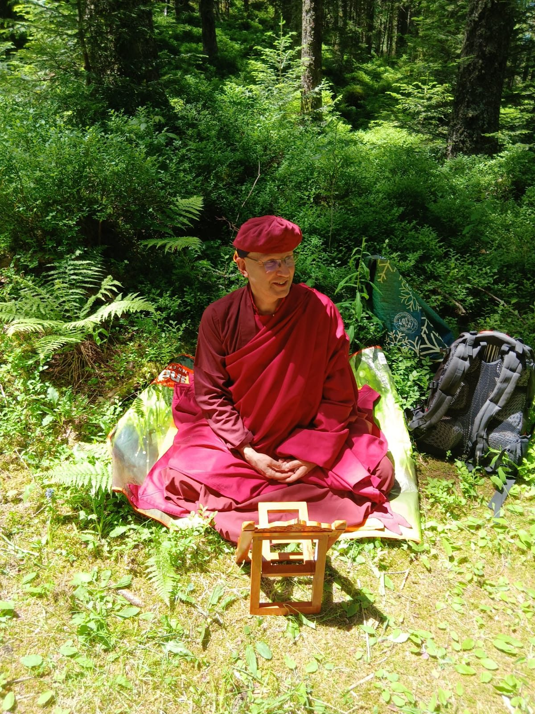
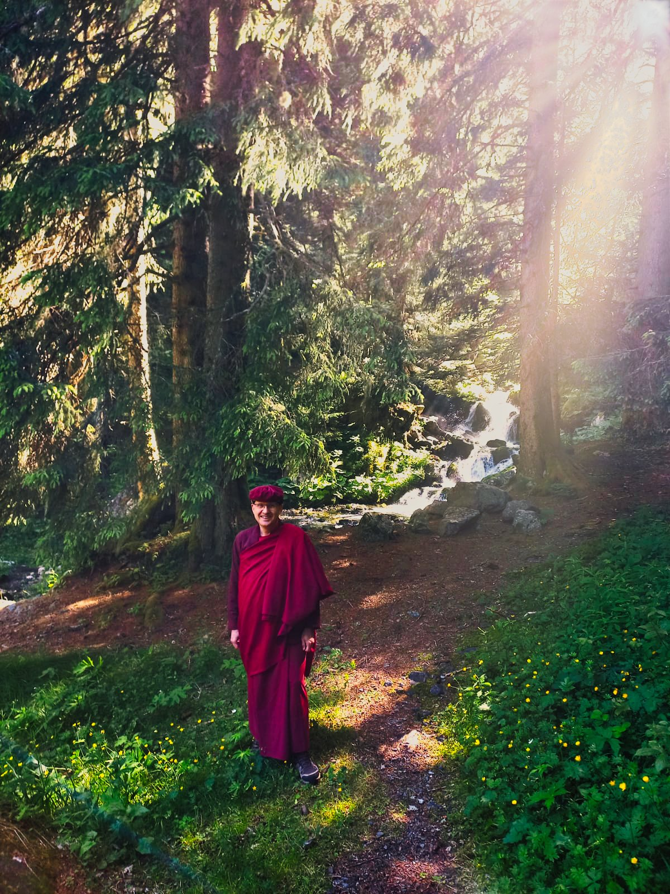

Faire connaître la culture bouddhiste himalayenne, notamment la pratique philosophique et spirituelle du bouddhisme selon la tradition tibétaine de la lignée Drukpa Kagyu.
Drukpa Grenoble propose tout au long de l'année des pratiques, méditations, enseignements et retraites selon la lignée Drukpa du bouddhisme himalayen. Ouvertes à toutes et à tous, ces activités permettent de découvrir et d'approfondir la pratique du vajrayana.
Le centre propose notamment des week-ends d'enseignements avec :
Nous vous encourageons également à vous rapprocher de Drukpa Plouray, où sont organisées des retraites collectives et des enseignements, notamment en présence de Drubpön Ngawang Rimpoché.

Adhésion. Drukpa Grenoble étant une association loi 1901, l'adhésion est nécessaire pour participer aux activités. Nous écrire →

« Ouvertes à toutes et à tous, ces activités permettent de découvrir et d'approfondir la pratique du vajrayana. »
Le centre Drukpa Grenoble participe au dialogue interreligieux en Isère.
Lopön Thrinlé a participé à plusieurs reprises à des rencontres au Centre théologique de Meylan, ainsi qu'au voyage interreligieux à Rome en octobre 2025.
Live to Love est une association créée par Sa Sainteté Gyalwang Drukpa pour développer la motivation altruiste de chacun. C'est une association laïque.
Elle intervient dans :
En France, Live to Love propose les journées altruistes : tous les deux mois, chacun peut se mettre en route, seul ou en groupe, pour une activité altruiste de son choix, puis la partager.
Calendrier des journées altruistes
Les prochaines dates seront publiées ici.